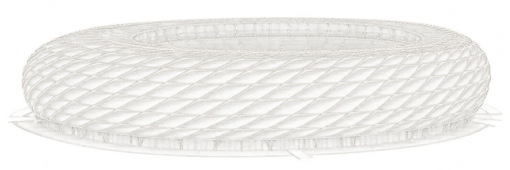

Servus André!
Deine Apps
Deine Eingänge
Bayern-Spielplan
Stand: 28.10.2026 · Profis MännerDeine Apps.
Bis zu sechs Favoriten stehen direkt auf deiner Startseite.
Mit dem Stern wählst du deine Stammelf.
Deine TV-Eingänge.
Die vom Fernseher gemeldeten Eingänge und deine eigenen Namen.
So heißen deine Geräte
Ganz dein Heimspiel.
Begrüßung, Klang und Design nach deinem Geschmack.
Servus André, du bist dahoam.
Deine persönliche Begrüßung auf der Startseite.
Deine Begrüßung folgt der Torhymne. Ohne Hymne begrüßt dich die Stimme direkt.
Deutsche Systemstimme des Fernsehers
Deine Torhymne zum Heimspiel.
Der integrierte Ausschnitt von 0:00 bis 0:05 spielt beim Öffnen der Startseite. Eine aktivierte Begrüßungsstimme folgt anschließend.
Dein Fünf-Sekunden-Ausschnitt ist integriert und bereit.
Deine Torhymne ist bereit. Starte die Hörprobe oder teste den Startbildschirm.
Fünf Vorlagen. Dein Heimspiel.
Wähle die komplette Gestaltung. Apps, Eingänge und deine Begrüßung bleiben erhalten.
Eine Pause im Bayern-Stil.
Eine ruhige Uhr, das Wappen und dezentes Bayern-Rot.
Dein Heimspiel bleibt aktuell.
Prüfe neue Versionen oder wähle eine APK-Datei. Deine Designs und Einstellungen bleiben bei einem Update erhalten.
APK-Datei auswählen oder eine Online-Quelle hinterlegen.
Die App prüft die Datei. Die Installation bestätigst du im Systemfenster deines Fernsehers.
Ohne Online-Quelle kannst du eine APK-Datei auswählen. Mit einer hinterlegten Quelle zeigt „Nach Updates suchen“ neue Versionen an.